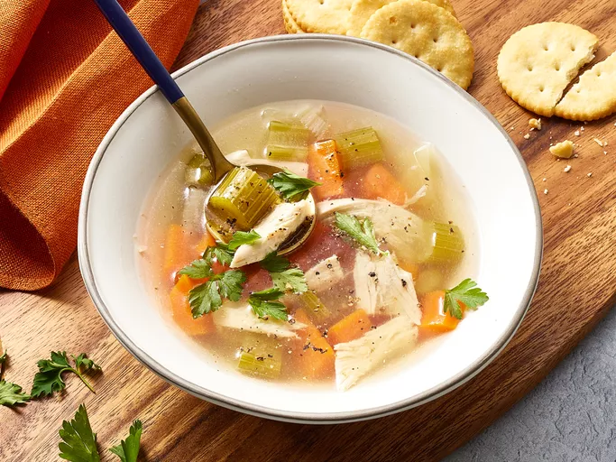

Homemade Chicken Soup

Description
This homemade chicken soup recipe is well worth making — it's good for the body and the soul. How is it that plain chicken and vegetables simmered together can taste so satisfying? You don't have to be sick to deserve to enjoy it!
Ingredients
- Chicken
- Vegetables
- Seasonings
Steps
- Make the stock by boiling the chicken and veggies until the meat is falling off the bone.
- Remove the chicken and cut into pieces (discard skin and bones).
- Strain the vegetables (reserving the stock) and cut into pieces. Rinse the pot.
- Return everything to the pot. Heat the soup through and season to taste.